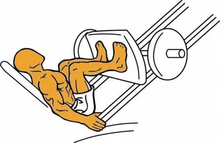

Prensa de piernas
- 1. Siéntate con la espalda pegada al respaldo y los pies a la anchura de los hombros.
- 2. Asegúrate de que el peso esté bien distribuido y mantén el control del movimiento.
- 3. Flexiona las rodillas hasta formar un ángulo de 90°, sin despegar la espalda del respaldo.
- 4. Impulsa la plataforma hasta casi estirar las piernas, sin bloquear las rodillas.

Sentadillas
- 1. Coloca los pies a la anchura de los hombros, con la espalda recta y el core activado.
- 2. Baja lentamente flexionando rodillas y caderas, manteniendo el peso en los talones.
- 3. Llega hasta abajo con muslos paralelos al suelo, sin que las rodillas sobrepasen los pies.
- 4. Sube con control empujando con los talones hasta la posición inicial.